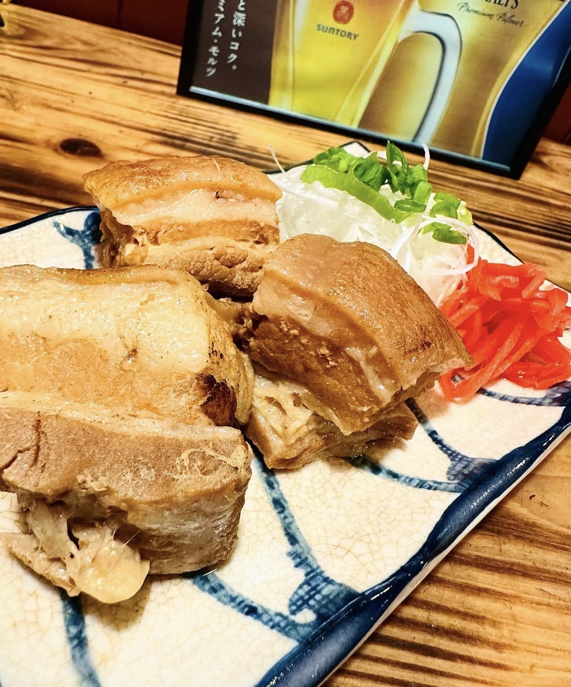
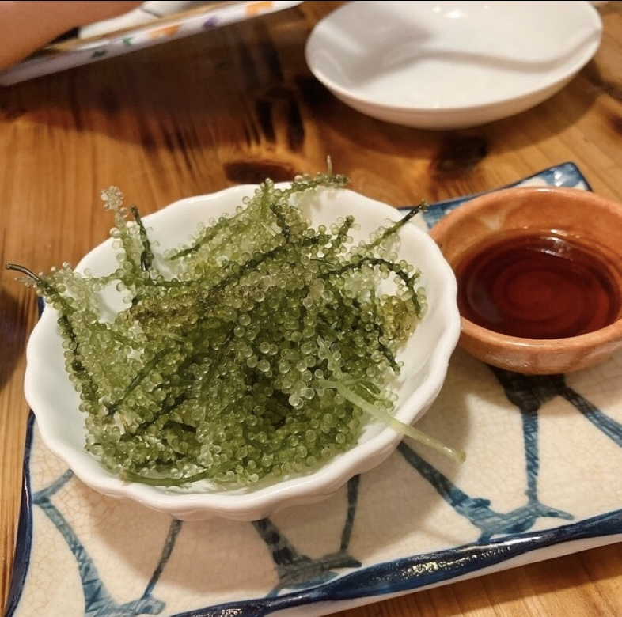
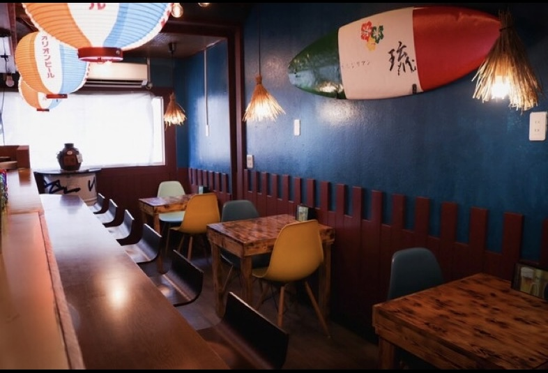
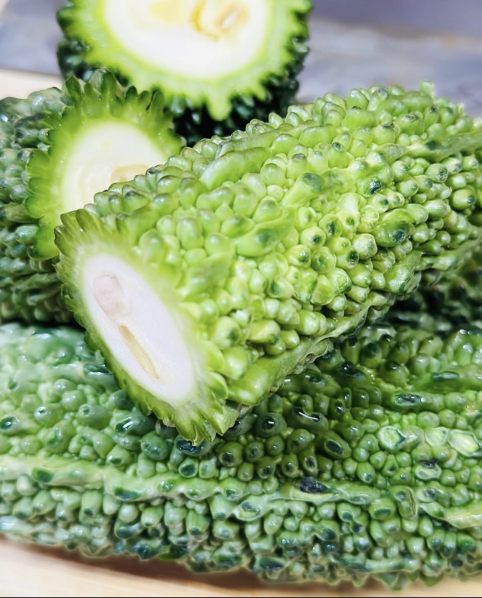
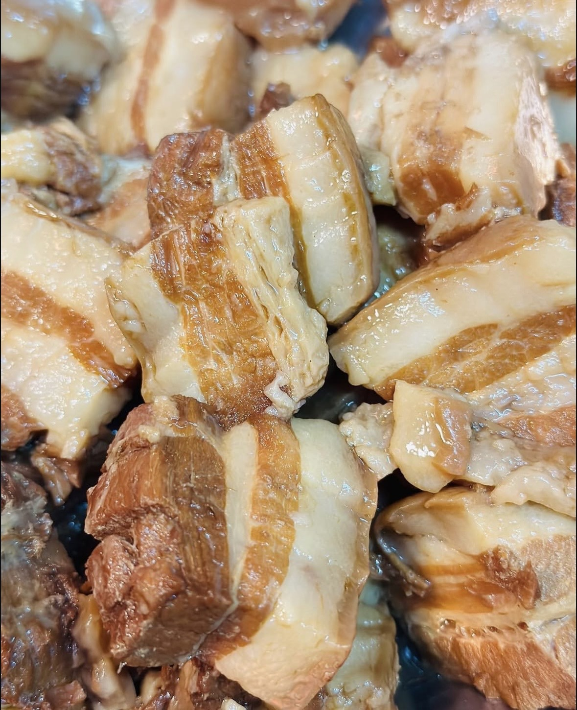
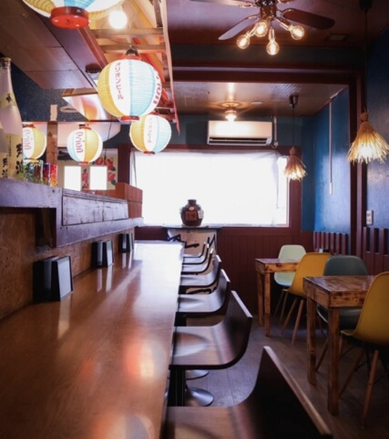
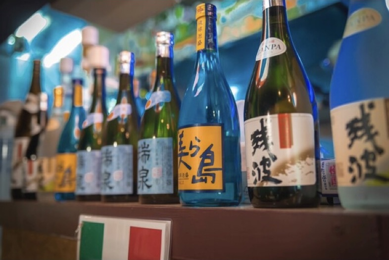
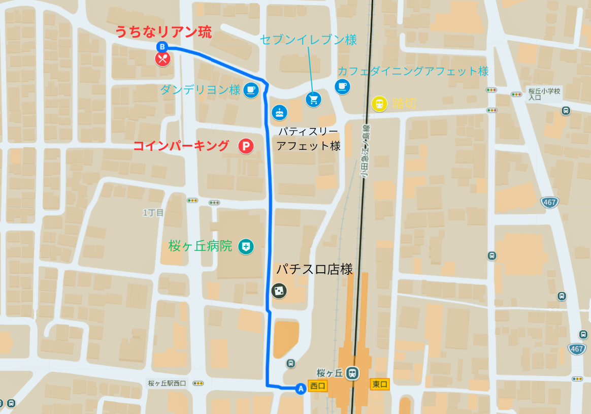

沖縄料理をベースに、イタリアンの調理法と食材を融合。
素材の旨みを引き出す無化調の出汁、沖縄直送の食材で
ここだけの「創作沖縄料理」をお届けします。

元イタリアンシェフの店主トーマスが手がける、赤ワインや数種のスパイスを駆使した独自の味づくり。伝統と創造が出会う一皿を。

出汁は豚骨・鰹・貝からじっくり抽出した無化調仕立て。沖縄直送の海ぶどうや宮古島のもずくなど厳選食材を使用。

12席の小さなお店だからこそ生まれる温かさ。店主トーマスとの会話を楽しみながら、沖縄のようなひとときを。
沖縄から届く旬の食材を中心に、
一つひとつの素材と真剣に向き合っています。


「気軽に沖縄気分」を叶える、大人気のお得セット。
お一人でも、仲間とでも、ちょい飲みにぴったり。
ブルーの壁に沖縄提灯、サーフボード。
泡盛のボトルが並ぶカウンターで、まるで沖縄の夜を過ごすような空間。


美味しい沖縄料理と、店長が作り出す暖かい空間。まるで沖縄に来た気持ちになれました。大満足です！
— 地元ブログよりせんべろセットがとにかくお得！ドリンクとフードから計4品で1,000円はすごい。味も本格的で何度でも通いたくなります。
— 食べログレビューよりマスターめっちゃ良い人！初めてでも話してて時間があっという間でした。タコライスが最高に美味しい。
— SNS投稿より大和の桜ヶ丘にこんな素敵なお店が！沖縄気分を味わえて、料理も雰囲気も大好きです。予約必須ですよ。
— SNS投稿より| 店名 | うちなリアン 琉（りゅう） |
|---|---|
| 住所 | 神奈川県大和市福田1-18-1 |
| 電話 | 070-3296-0860 |
| 営業時間 | 18:00〜24:00（L.O. 23:00） |
| 定休日 | 月曜日 |
| 席数 | 12席（カウンター9席・テーブル3席） |
| お支払い | 現金・PayPay |
| 駐車場 | なし（近隣コインパーキングをご利用ください） |
| お子様 | 歓迎（ベビーカー入店可） |
| 貸切 | 可（20名様まで・要問合せ） |
小田急江ノ島線「桜ヶ丘」駅より徒歩5分
